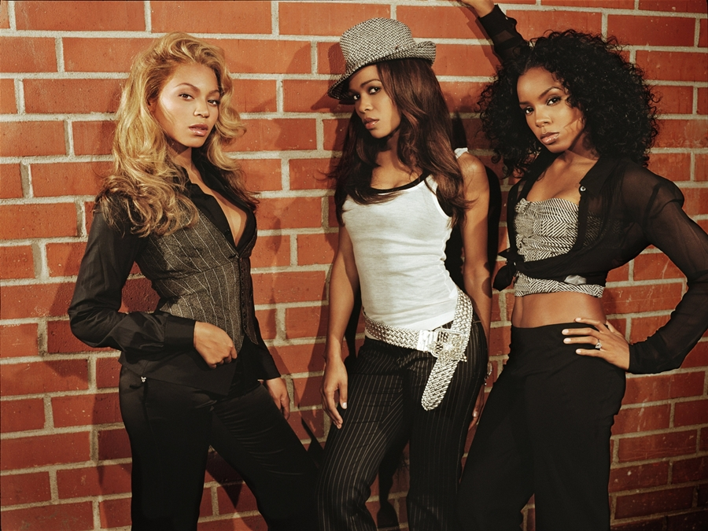
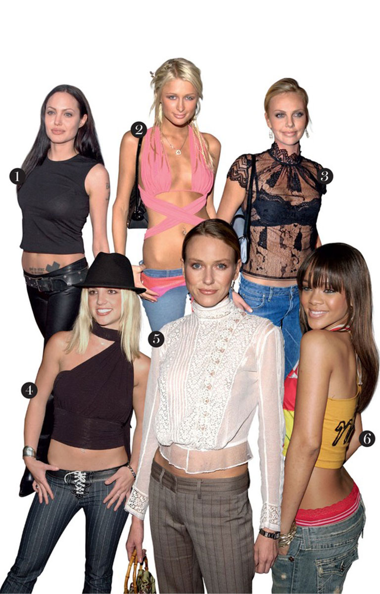

Nesse site, vamos falar sobre a década mais famosa, anos 2000. Ela é conhecida pela moda e por suas músicas. O estilo se popularizou por conta de suas estampas exageradas, calças de cintura baixa, acessórios chamativos e o excesso de cinto. É um período que marcou também porseu avanço tecnológico, culturais e acontecimentos importantes no mundo.

A música da década, foi marcado pela diversidade de estilos e pelo crescimento da música digital. Nessa época, as pessoas começaram a baixar músicas pela internet e a usar aparelhos MP3 para ouvi-las
Principais estilos musicais Pop; Rock; Hip-Hop/ Rap; R&B; Funk; Sertanejo; Músicas eletrônicas.
Artistas em destaques no mu Britney Spears; Beyoncé; Eminem; Black Eyed Peas ; Linkin Park
Ivete Sangalo; Claudia Leitte; Charlie Bronw Jr.; Jorge & Mateus; NZ zero
Suas tecnologias A tecnologia transformou completamente a forma de ouvir música. Os CDs ainda eram populares, mas os aparelhos MP3 começaram a dominar o mercado, permitindo que as pessoas armazenassem centenas de músicas em um único dispositivo portátil. A internet teve um papel fundamental nessa mudança. Muitos usuários passaram a baixar músicas e compartilhar arquivos digitais, tornando o acesso às canções mais rápido e ampliando a divulgação de artistas em todo o mundo.
A música além das rádios Os videoclipes ganharam ainda mais importância nos anos 2000. Eles eram exibidos em canais de televisão e também começaram a ser assistidos pela internet, ajudando artistas a fortalecer sua imagem e alcançar novos públicos.

Shows e festivais Os festivais e shows atraíam milhares de pessoas. Grandes eventos musicais reuniam artistas nacionais e internacionais, proporcionando experiências marcantes para os fãs e movimentando a indústria do entretenimento. A música também influenciou a moda da época. Roupas coloridas, acessórios chamativos, bonés, pulseiras e penteados inspirados em cantores e bandas eram comuns entre adolescentes e jovens, mostrando a forte ligação entre música e comportamento.
A música dos anos 2000 teve grande influência na vida dos jovens, servindo como forma de expressão, diversão e identificação. Muitas pessoas acompanhavam seus artistas favoritos, decoravam letras de músicas e compartilhavam seus gostos musicais com amigos. Além disso, a música estava presente em festas, escolas, programas de televisão e redes sociais, tornando-se uma parte importante da cultura da época e ajudando a construir memórias que permanecem vivas até hoje.
 Além do entretenimento, muitas músicas abordavam temas sociais, emocionais e culturais.
As letras falavam sobre amizade, amor, superação, sonhos e desafios do cotidiano, criando uma conexão especial entre os artistas e o público.
Além do entretenimento, muitas músicas abordavam temas sociais, emocionais e culturais.
As letras falavam sobre amizade, amor, superação, sonhos e desafios do cotidiano, criando uma conexão especial entre os artistas e o público.
O marco da música contemporânea A década de 2000 foi um período de inovação e transformação para a música. O surgimento de novas tecnologias, a popularização da internet e a variedade de estilos musicais fizeram dessa época um marco importante na história da cultura contemporânea, deixando um legado que continua influenciando artistas e ouvintes até os dias atuais.